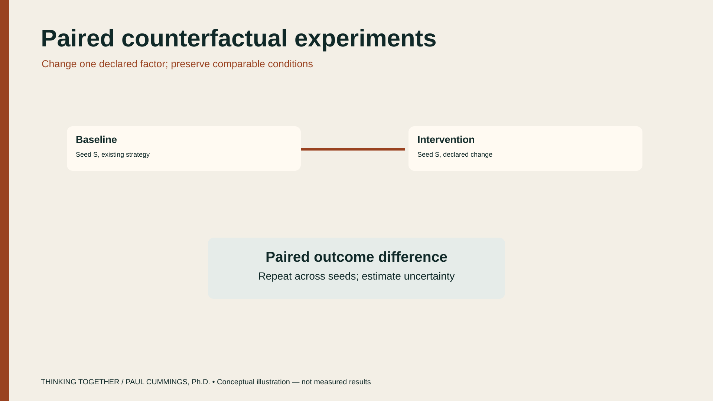

Case study · DCA
Night Crossing
A tightly timed operation in which no single person holds the whole picture — and plans fail as the assumptions supporting them lose validity.

Conceptual geometry — not an accident reconstruction or measured result. Teaching surrogates only.
Night Crossing is a methodological case for distributed decision-making near a busy airport environment. Information sits across pilots, controllers, procedures, communications, displays, aircraft, and organizational expectations. This account follows that teaching case. It is not a reconstruction of what each person knew, and it is not a finding about cause.
The problem
Communications weaken, partner aircraft report different things, and the operational window closes. The hard part is not only geometry and timing. It is the gap between what happened, what each party could see, and what each party believed.
A later analyst can see trajectories, timings, and records that no participant had at the moment. A valid analysis refuses that advantage. Each modeled actor receives only the observations, communications, procedures, and expectations plausibly available then.
Assumption health
Operational plans rarely fail instantaneously. They fail because the assumptions supporting the plan gradually lose validity. Night Crossing is used to teach that pipeline:
Observations → Evidence → Mission assumptions → Situation understanding → Operational choice margin → Recommendation
A critical plan-support assumption in the teaching premise is that one aircraft has positively identified the correct traffic and can maintain continuous visual separation. The scientific question is not whether a narrative sounds right after the fact. It is whether supporting and contradicting evidence are changing the health of that assumption while the plan is still in force.
| Inquiry move | What it protects against |
|---|---|
| Partial views | Writing one omniscient story over actors who never shared one world |
| Assumption tracking | Treating a plan as healthy after its supporting claims have weakened |
| Counterfactual tests | Confusing hindsight stories with constrained experiments |
| Micro + meso | Explaining everything as individual error or everything as procedure alone |
| Evidence outside the chat | Letting a fluent summary replace an auditable record |

What can be varied
Counterfactuals ask what changes if communication, routing, timing, procedure, or authority differ. They are constrained experiments inside a declared model of the world — not claims about what certainly would have happened.
- What each actor could observe at each moment
- Which communications arrived, when, and with what reliability
- Approach geometry and timing relative to declared procedures
- Whether a plan-support assumption is still supported by evidence
- Which interventions remain available before the window closes

How the inquiry is supposed to work
- Several partial worlds Understanding is a reconstruction of those views, not a single narrative written after the fact.
- Tests, not hindsight A counterfactual is a constrained experiment, not a claim about certainty under changed conditions.
- Micro and meso together Individual cognition matters. So do routines, roles, channels, and shared expectations. The decision system exists across them.
- Separate support from applicability Experimental support and decision-ready recommendation are different claims. A result can be informative for research and still fall outside a declared fidelity envelope for action.
How this opens the black box
Night Crossing is also a test of inquiry discipline for AI-assisted investigation. Models may help frame questions, keep alternatives visible, or explain evidence drawn from authoritative records. They do not get to invent observations, collapse partial views into one story, or treat a self-explanation as proof.
The same stance as the economics laboratory and the broader research program: decipher behavior by discovering which explanations survive controlled attempts to disprove them. See Opening the AI Black Box and the companion case on dynamic economic markets.